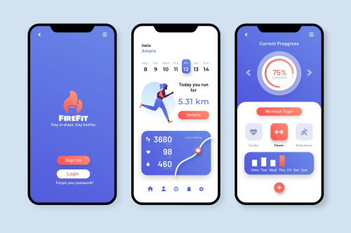
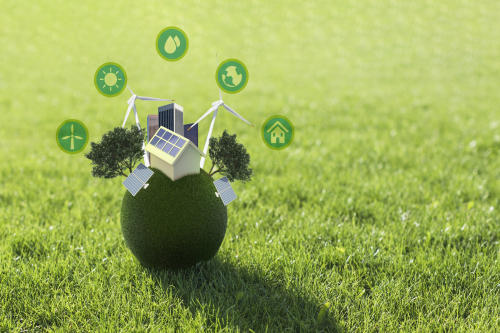

Custom software development
In today's rapidly evolving digital landscape, the demand for sustainable and environmentally conscious software solutions is more critical than ever. Core Green Software Solutions stands at the forefront of this movement, offering innovative and eco-friendly custom software development services that not only meet business needs but also align with the global push towards sustainability.
Core Green Software Solutions integrates sustainability from the ground up. Our approach to software design emphasizes energy efficiency and minimal resource consumption. By optimizing code, reducing unnecessary processing, and leveraging cloud computing, we ensure that the software we develop has a reduced carbon footprint. The heart of any software is its algorithm, and we specialize in creating algorithms that are not only effective but also energy-efficient. This means your custom software solutions will run faster and consume less power, contributing to a lower environmental impact while enhancing performance.
Our development practices prioritize sustainability, including using development tools and processes that reduce waste, implementing continuous integration and deployment to avoid redundant operations, and adopting agile methodologies that promote iterative and incremental improvements. This ensures that our software solutions are both effective and environmentally responsible. Leveraging cloud computing is a key aspect of our strategy. By using cloud platforms known for their commitment to green energy, we help businesses reduce their on-premise hardware needs. This not only lowers operational costs but also reduces the overall carbon emissions associated with physical servers and data centers.
We understand that sustainability extends beyond the initial development phase. Core Green Software Solutions offers comprehensive lifecycle management services, ensuring that software remains efficient and eco-friendly throughout its operational life. This includes regular updates, performance tuning, and end-of-life recycling strategies. Beyond software development, we provide consultancy services to help businesses adopt green IT practices. This includes guidance on sustainable infrastructure, energy-efficient hardware, and best practices for reducing the environmental impact of IT operations. Our goal is to help organizations not only create green software but also operate in a greener, more sustainable manner.
Our commitment to sustainability is reflected in our corporate ethos. We actively participate in and support various green initiatives and partnerships that promote environmental conservation and sustainability. By choosing Core Green Software Solutions, businesses align themselves with a partner dedicated to making a positive environmental impact.
Incorporating sustainability into software development is not just a trend; it is a necessity. Core Green Software Solutions is committed to leading this charge, providing businesses with custom software solutions that are not only high-performing and tailored to their needs but also environmentally responsible. By choosing us, you are not only investing in the future of your business but also contributing to a greener, more sustainable world.
For more information on how Core Green Software Solutions can help your business achieve its sustainability goals, contact us today!
Mobile App development
 In today's fast-paced digital world, the need for sustainable and eco-friendly mobile app solutions is more pressing than ever. Core Green Software Solutions leads the way in this green revolution, offering cutting-edge mobile app development services that not only fulfill business requirements but also support environmental sustainability.
Core Green Software Solutions integrates sustainability into every aspect of mobile app development. Our design philosophy prioritizes energy efficiency and minimal resource usage. By optimizing code, reducing unnecessary processing, and leveraging cloud technologies, we create mobile apps that significantly lower their carbon footprint. Our expertise in developing energy-efficient algorithms ensures that your mobile apps run swiftly and consume less power, resulting in a lower environmental impact while enhancing performance.
Our development practices are rooted in sustainability. We utilize development tools and processes designed to minimize waste, implement continuous integration and deployment to avoid redundant operations, and adopt agile methodologies that promote incremental improvements. This ensures that our mobile app solutions are not only effective but also environmentally responsible. Utilizing cloud computing is a fundamental part of our strategy. By partnering with cloud platforms committed to green energy, we help businesses reduce their reliance on on-premise hardware. This approach not only cuts operational costs but also reduces overall carbon emissions associated with physical servers and data centers.
Recognizing that sustainability goes beyond the initial development phase, Core Green Software Solutions offers comprehensive lifecycle management services. We ensure that mobile apps remain efficient and eco-friendly throughout their lifecycle through regular updates, performance tuning, and end-of-life recycling strategies. Beyond mobile app development, we provide consultancy services to help businesses adopt green IT practices. This includes advising on sustainable infrastructure, energy-efficient hardware, and best practices for minimizing the environmental impact of IT operations. Our goal is to help organizations not only develop green mobile apps but also operate in a more sustainable manner.
Our commitment to sustainability is reflected in our corporate values. We actively engage in and support various green initiatives and partnerships that promote environmental conservation and sustainability. By choosing Core Green Software Solutions, businesses partner with a company dedicated to making a positive environmental impact.
Integrating sustainability into mobile app development is not just a trend; it's a necessity. Core Green Software Solutions is dedicated to leading this charge, providing businesses with custom mobile app solutions that are high-performing, tailored to their needs, and environmentally responsible. By partnering with us, you are investing in the future of your business and contributing to a greener, more sustainable world.
For more information on how Core Green Software Solutions can help your business achieve its sustainability goals, contact us today!
Web development
In today's dynamic digital environment, the need for sustainable and environmentally friendly web solutions has never been more critical. Core Green Software Solutions is at the forefront of this movement, offering innovative web development services that not only meet business needs but also align with global sustainability goals.
Core Green Software Solutions integrates sustainability into every aspect of web development. Our design philosophy emphasizes energy efficiency and minimal resource consumption. By optimizing code, reducing unnecessary processing, and leveraging cloud technologies, we create websites that significantly lower their carbon footprint. Our expertise in developing energy-efficient algorithms ensures that your web applications run swiftly and consume less power, resulting in a lower environmental impact while enhancing performance.
Our development practices are rooted in sustainability. We utilize development tools and processes designed to minimize waste, implement continuous integration and deployment to avoid redundant operations, and adopt agile methodologies that promote incremental improvements. This ensures that our web solutions are not only effective but also environmentally responsible. Utilizing cloud computing is a fundamental part of our strategy. By partnering with cloud platforms committed to green energy, we help businesses reduce their reliance on on-premise hardware. This approach not only cuts operational costs but also reduces overall carbon emissions associated with physical servers and data centers.
Recognizing that sustainability goes beyond the initial development phase, Core Green Software Solutions offers comprehensive lifecycle management services. We ensure that web applications remain efficient and eco-friendly throughout their lifecycle through regular updates, performance tuning, and end-of-life recycling strategies. Beyond web development, we provide consultancy services to help businesses adopt green IT practices. This includes advising on sustainable infrastructure, energy-efficient hardware, and best practices for minimizing the environmental impact of IT operations. Our goal is to help organizations not only develop green web solutions but also operate in a more sustainable manner.
Our commitment to sustainability is reflected in our corporate values. We actively engage in and support various green initiatives and partnerships that promote environmental conservation and sustainability. By choosing Core Green Software Solutions, businesses partner with a company dedicated to making a positive environmental impact.
Our commitment to sustainability is reflected in our corporate values. We actively engage in and support various green initiatives and partnerships that promote environmental conservation and sustainability. By choosing Core Green Software Solutions, businesses partner with a company dedicated to making a positive environmental impact.
Integrating sustainability into web development is not just a trend; it's a necessity. Core Green Software Solutions is dedicated to leading this charge, providing businesses with custom web solutions that are high-performing, tailored to their needs, and environmentally responsible. By partnering with us, you are investing in the future of your business and contributing to a greener, more sustainable world.
For more information on how Core Green Software Solutions can help your business achieve its sustainability goals, contact us today!
Green IT solutions
 In today's tech-driven world, the importance of sustainable and environmentally responsible IT solutions cannot be overstated. Core Green Software Solutions is at the forefront of this initiative, offering a comprehensive suite of Green IT solutions designed to meet business needs while minimizing environmental impact.
Core Green Software Solutions is dedicated to integrating sustainability into every aspect of IT. Our approach emphasizes energy efficiency, minimal resource consumption, and the use of eco-friendly technologies. By optimizing system performance, reducing unnecessary processing, and leveraging cloud computing, we ensure that our Green IT solutions significantly reduce the carbon footprint of your operations.
We prioritize the development of energy-efficient algorithms and systems that run smoothly while consuming less power. This approach not only reduces environmental impact but also enhances the overall performance of your IT infrastructure. Our development practices are deeply rooted in sustainability, utilizing tools and processes that minimize waste and avoid redundant operations. By adopting agile methodologies, we promote continuous improvements that ensure our solutions remain effective and environmentally responsible over time.
Cloud computing is a cornerstone of our Green IT strategy. By partnering with cloud platforms committed to renewable energy, we help businesses reduce their dependence on physical hardware. This transition not only lowers operational costs but also significantly cuts down on carbon emissions associated with traditional data centers.
Recognizing that sustainability extends beyond initial implementation, Core Green Software Solutions offers comprehensive lifecycle management services. We ensure that your IT infrastructure remains efficient and eco-friendly through regular updates, performance tuning, and end-of-life recycling strategies. Our consultancy services further support businesses in adopting green IT practices, providing guidance on sustainable infrastructure, energy-efficient hardware, and best practices for reducing the environmental impact of IT operations. Our aim is to help organizations create and maintain IT environments that are both high-performing and sustainable.
Our commitment to sustainability is reflected in our corporate values and actions. We actively support various green initiatives and partnerships that promote environmental conservation. By choosing Core Green Software Solutions, businesses align with a partner dedicated to making a positive environmental impact.
Integrating sustainability into IT is not just a trend; it is a crucial step towards a sustainable future. Core Green Software Solutions is committed to leading this charge, providing businesses with Green IT solutions that are innovative, efficient, and environmentally responsible. Partnering with us means investing in the future of your business and contributing to a greener world.
For more information on how Core Green Software Solutions can help your business achieve its sustainability goals, contact us today!
Digital transformation
 In today's rapidly evolving digital landscape, the role of sustainable and environmentally conscious practices in digital transformation is paramount. Core Green Software Solutions is a pioneer in this space, offering comprehensive digital transformation services that not only drive innovation and efficiency but also promote sustainability and environmental responsibility.
In today's rapidly evolving digital landscape, the role of sustainable and environmentally conscious practices in digital transformation is paramount. Core Green Software Solutions is a pioneer in this space, offering comprehensive digital transformation services that not only drive innovation and efficiency but also promote sustainability and environmental responsibility.
Core Green Software Solutions integrates sustainability into every phase of digital transformation. Our approach prioritizes energy efficiency and minimal resource consumption from the outset. By optimizing processes, reducing unnecessary digital waste, and leveraging cloud computing, we ensure that digital transformation initiatives significantly lower their carbon footprint. Our expertise in developing energy-efficient algorithms and systems ensures that your digital transformation projects run smoothly, consume less power, and deliver enhanced performance while reducing environmental impact.
Our development practices are rooted in sustainability. We utilize advanced tools and methodologies designed to minimize waste, implement continuous integration and deployment to streamline operations, and adopt agile frameworks that support iterative improvements. This ensures that our digital transformation solutions are not only effective but also environmentally responsible. A key aspect of our strategy is leveraging cloud computing, partnering with cloud platforms committed to renewable energy. This approach helps businesses reduce reliance on physical hardware, cutting operational costs and significantly lowering carbon emissions associated with traditional data centers.
Recognizing that sustainability extends beyond the initial implementation phase, Core Green Software Solutions offers comprehensive lifecycle management services. We ensure that digital transformation solutions remain efficient and eco-friendly through regular updates, performance tuning, and end-of-life recycling strategies. Our consultancy services further support businesses in adopting green practices throughout their digital transformation journey, providing guidance on sustainable infrastructure, energy-efficient hardware, and best practices for minimizing the environmental impact of IT operations. Our goal is to help organizations achieve a seamless and sustainable digital transformation.
Our commitment to sustainability is embedded in our corporate values and actions. We actively participate in and support various green initiatives and partnerships that promote environmental conservation and sustainability. By choosing Core Green Software Solutions, businesses align themselves with a partner dedicated to making a positive environmental impact.
Embracing sustainability in digital transformation is not just a trend; it is an essential step towards a sustainable future. Core Green Software Solutions is committed to leading this charge, providing businesses with digital transformation solutions that are innovative, efficient, and environmentally responsible. Partnering with us means investing in the future of your business while contributing to a greener, more sustainable world.
For more information on how Core Green Software Solutions can help your business achieve its digital transformation and sustainability goals, contact us today!